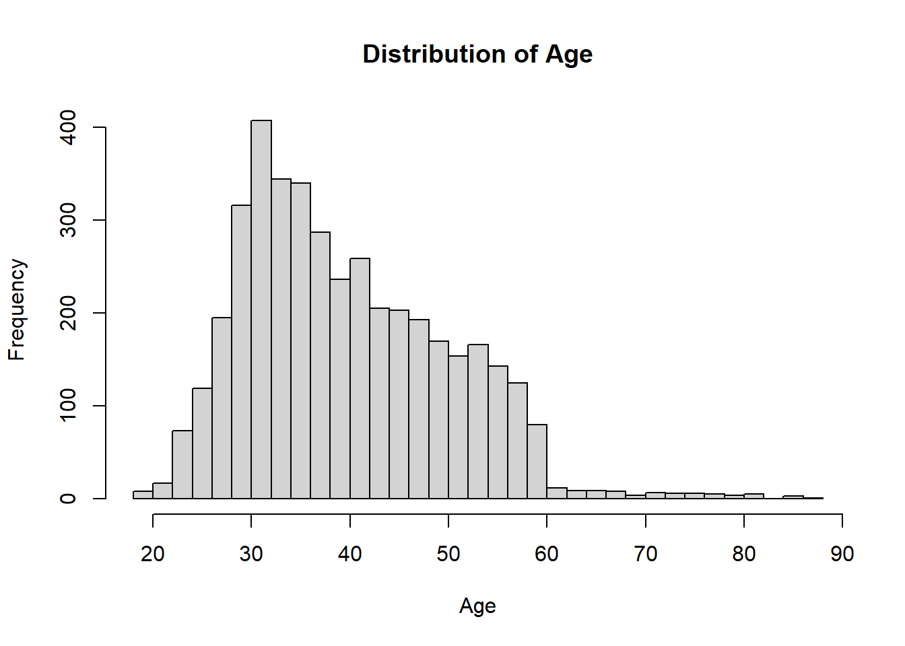
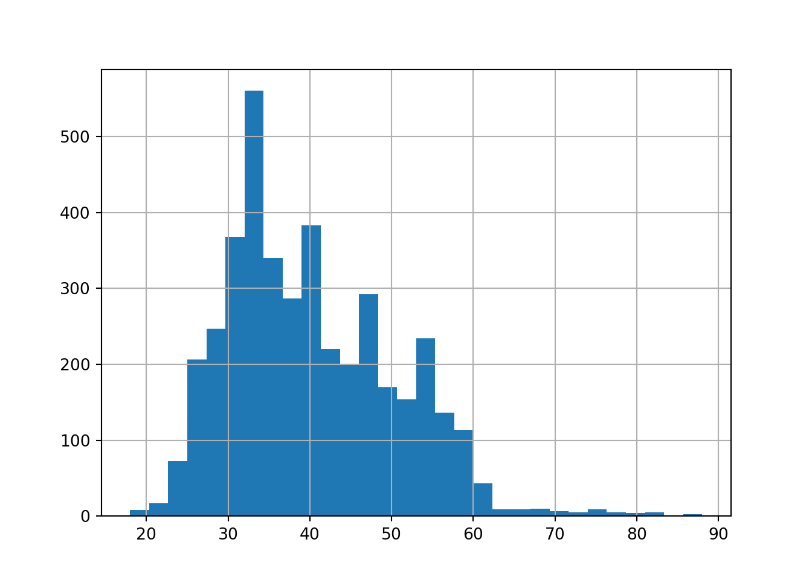
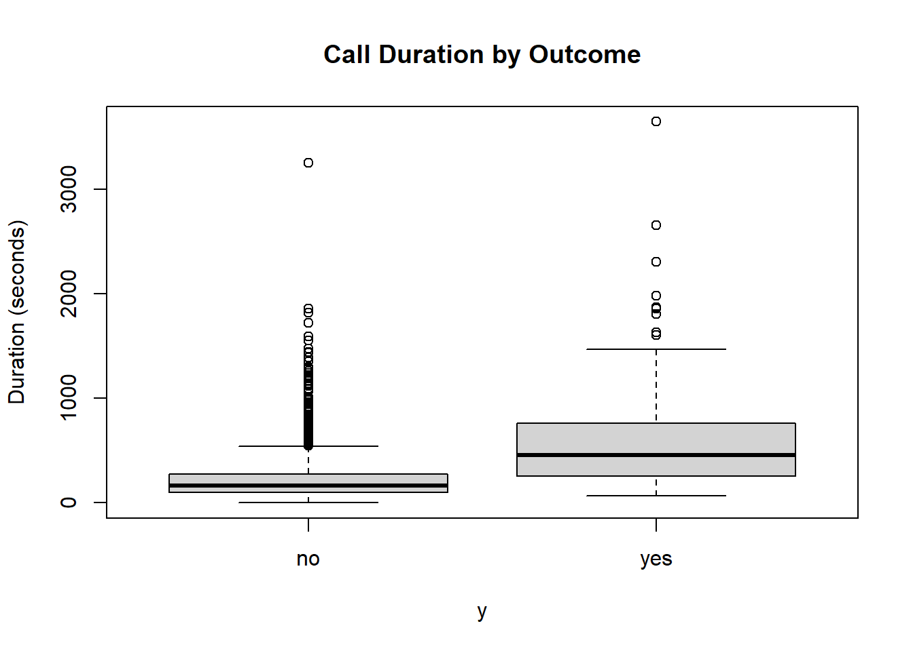
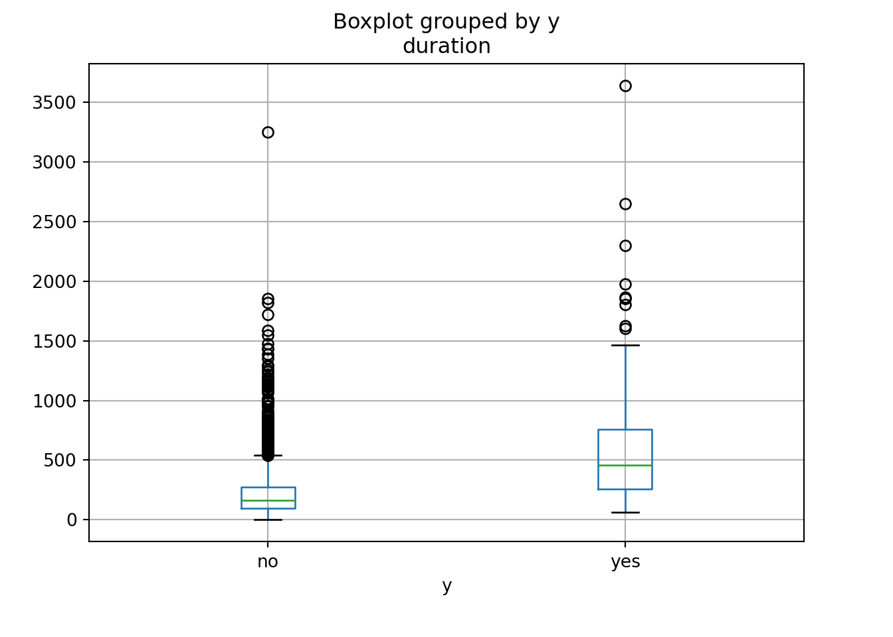
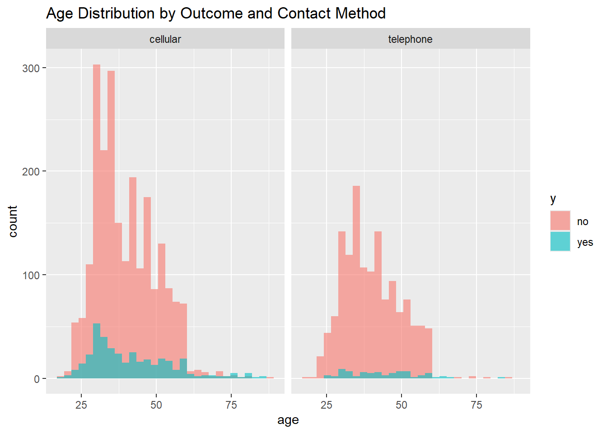
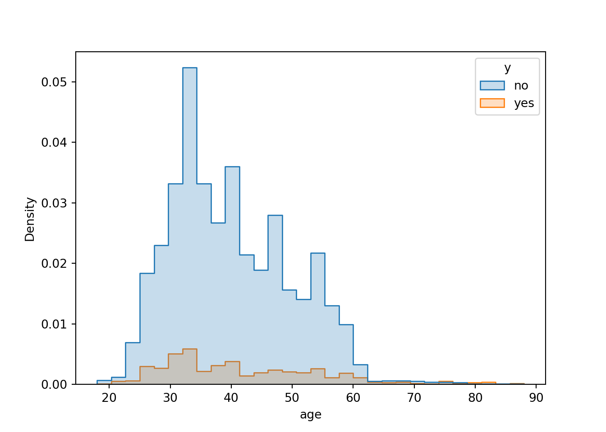

library(reticulate)
use_python("C:/Program Files/Python313/python.exe", required = TRUE)Week1: Data Wrnagling and EDA
The Dataset
We’ll use “UCI Bank Marketing” dataset to demonstrate week 1 concepts.
The Bank Marketing dataset is a real-world dataset from the UCI Machine Learning Repository about direct marketing campaigns carried out by a Portuguese bank. The bank used telephone calls to contact potential customers and offer them a term deposit product — a kind of savings or investment account.
Part A: First Contact with the Dataset
A1. Loading and Inspecting the Dataset
We begin by loading the dataset and performing a minimal structural inspection. At this stage, the goal is not analysis, but orientation.
R: Load and Inspect the Data
Load required packages
library(tidyverse)Read the dataset
bank <- read.csv("data/raw/bank-additional.csv", sep = ";",
stringsAsFactors = FALSE)Display first few rows
head(bank) age job marital education default housing loan contact
1 30 blue-collar married basic.9y no yes no cellular
2 39 services single high.school no no no telephone
3 25 services married high.school no yes no telephone
4 38 services married basic.9y no unknown unknown telephone
5 47 admin. married university.degree no yes no cellular
6 32 services single university.degree no no no cellular
month day_of_week duration campaign pdays previous poutcome emp.var.rate
1 may fri 487 2 999 0 nonexistent -1.8
2 may fri 346 4 999 0 nonexistent 1.1
3 jun wed 227 1 999 0 nonexistent 1.4
4 jun fri 17 3 999 0 nonexistent 1.4
5 nov mon 58 1 999 0 nonexistent -0.1
6 sep thu 128 3 999 2 failure -1.1
cons.price.idx cons.conf.idx euribor3m nr.employed y
1 92.893 -46.2 1.313 5099.1 no
2 93.994 -36.4 4.855 5191.0 no
3 94.465 -41.8 4.962 5228.1 no
4 94.465 -41.8 4.959 5228.1 no
5 93.200 -42.0 4.191 5195.8 no
6 94.199 -37.5 0.884 4963.6 noDimensions of the dataset
dim(bank)[1] 4119 21Column names
colnames(bank) [1] "age" "job" "marital" "education"
[5] "default" "housing" "loan" "contact"
[9] "month" "day_of_week" "duration" "campaign"
[13] "pdays" "previous" "poutcome" "emp.var.rate"
[17] "cons.price.idx" "cons.conf.idx" "euribor3m" "nr.employed"
[21] "y" Explanation (R)
- The file uses
;as a separator, which is common in datasets. - We explicitly disable automatic factor conversion to retain control over data types.
dim()confirms the dataset size (rows × columns).colnames()provides an overview of available variables.
Python: Load and Inspect the Data
import pandas as pdRead the dataset
bank = pd.read_csv("data/raw/bank-additional.csv", sep=";")Display first few rows
bank.head() age job marital ... euribor3m nr.employed y
0 30 blue-collar married ... 1.313 5099.1 no
1 39 services single ... 4.855 5191.0 no
2 25 services married ... 4.962 5228.1 no
3 38 services married ... 4.959 5228.1 no
4 47 admin. married ... 4.191 5195.8 no
[5 rows x 21 columns]Dimensions of the dataset
bank.shape(4119, 21)Column names
bank.columns.tolist()['age', 'job', 'marital', 'education', 'default', 'housing', 'loan', 'contact', 'month', 'day_of_week', 'duration', 'campaign', 'pdays', 'previous', 'poutcome', 'emp.var.rate', 'cons.price.idx', 'cons.conf.idx', 'euribor3m', 'nr.employed', 'y']Explanation (Python)
- As in R, we specify the separator explicitly.
.head()shows the first five rows..shapereports the dataset size..columns.tolist()gives a readable list of variable names.
A2. What Does One Row Represent?
Before doing any analysis, we must understand what a single row corresponds to in the real world.
Interpretation
A single row represents one contact attempt made during a direct marketing campaign by a Portuguese bank, where:
- a specific client was contacted,
- during a specific campaign period,
- under a particular economic context,
- resulting in a subscription outcome (
y = yesorno).
Importantly:
- The same client may appear multiple times.
- Multiple rows do not necessarily represent independent clients.
- The dataset records contact-level events, not client summaries.
This interpretation has consequences for:
- aggregation (Since the same client can appear multiple times, you must be careful when summarising or aggregating the data.),
- leakage (Some variables describe outcomes of previous contacts or later information in the campaign. If these are used incorrectly, the model may accidentally use information that would not have been known at the time of prediction.),
- model design later in the module (Because rows are not independent clients, common modeling assumptions (such as independence of observations) may be violated.).
A3. Identifying Groups of Variables
We now group variables conceptually, based on what aspect of the process they describe.
Economic Context Variables
These describe the macroeconomic environment at the time of the campaign:
emp.var.rate: The employment variation rate, a macroeconomic indicator.cons.price.idx: The consumer price index, a measure of inflation.cons.conf.idx: The consumer confidence index, measuring how optimistic consumers feel about the economy.euribor3m: The 3-month Euribor interest rate, a key European benchmark rate.nr.employed: The total number of people employed in the economy (in thousands).
These variables are shared across many rows and are not client-specific.
Outcome Variable
y— whether the client subscribed to a term deposit (yes/no)
This is the target variable for supervised learning.
A4. Initial Structural Observations
From this first inspection, we can already make several important observations:
- The dataset mixes client-level, event-level, and context-level information.
- Several variables are categorical but encoded as strings.
- Some numeric-looking values (e.g.
pdays = 999) may actually be codes, not measurements. - The presence of
durationsuggests that not all variables are valid at prediction time.
These observations will guide all subsequent wrangling and modelling decisions.
Key Takeaway from Part A
Understanding what a row represents is more important than understanding how to fit a model.
Before moving to cleaning or EDA, we must be clear about:
- the data-generating process,
- the unit of analysis,
- and which variables are legitimate inputs.
Part B: Data Types & Representation
B1. Why Data Types Matter
Before cleaning or analysis, we must decide how each variable should be interpreted. Software may assign a data type automatically, but meaning comes from context, not syntax.
A common mistake is to assume that:
- numeric values are always quantitative, or
- categorical values are always nominal.
In this section, we examine what each variable represents, rather than how it is stored.
B2. Inspecting Software-Inferred Data Types
We start by checking how the software interprets each column.
R: Inspect Column Types
str(bank)'data.frame': 4119 obs. of 21 variables:
$ age : int 30 39 25 38 47 32 32 41 31 35 ...
$ job : chr "blue-collar" "services" "services" "services" ...
$ marital : chr "married" "single" "married" "married" ...
$ education : chr "basic.9y" "high.school" "high.school" "basic.9y" ...
$ default : chr "no" "no" "no" "no" ...
$ housing : chr "yes" "no" "yes" "unknown" ...
$ loan : chr "no" "no" "no" "unknown" ...
$ contact : chr "cellular" "telephone" "telephone" "telephone" ...
$ month : chr "may" "may" "jun" "jun" ...
$ day_of_week : chr "fri" "fri" "wed" "fri" ...
$ duration : int 487 346 227 17 58 128 290 44 68 170 ...
$ campaign : int 2 4 1 3 1 3 4 2 1 1 ...
$ pdays : int 999 999 999 999 999 999 999 999 999 999 ...
$ previous : int 0 0 0 0 0 2 0 0 1 0 ...
$ poutcome : chr "nonexistent" "nonexistent" "nonexistent" "nonexistent" ...
$ emp.var.rate : num -1.8 1.1 1.4 1.4 -0.1 -1.1 -1.1 -0.1 -0.1 1.1 ...
$ cons.price.idx: num 92.9 94 94.5 94.5 93.2 ...
$ cons.conf.idx : num -46.2 -36.4 -41.8 -41.8 -42 -37.5 -37.5 -42 -42 -36.4 ...
$ euribor3m : num 1.31 4.86 4.96 4.96 4.19 ...
$ nr.employed : num 5099 5191 5228 5228 5196 ...
$ y : chr "no" "no" "no" "no" ...Explanation (R)
str()shows how R currently stores each column.- At this stage, many variables are character strings, even though they encode categories.
- Numeric-looking columns may still require reinterpretation.
Python: Inspect Column Types
bank.dtypesage int64
job object
marital object
education object
default object
housing object
loan object
contact object
month object
day_of_week object
duration int64
campaign int64
pdays int64
previous int64
poutcome object
emp.var.rate float64
cons.price.idx float64
cons.conf.idx float64
euribor3m float64
nr.employed float64
y object
dtype: objectExplanation (Python)
- Pandas infers data types based on values present.
- This inference is technical, not semantic.
- Our task is to judge whether the inferred types make conceptual sense.
B3. Conceptual Classification of Variables
We now classify variables based on what they mean, not how they are stored.
Campaign / Contact Variables
| Variable | Conceptual Type | Notes |
|---|---|---|
contact |
Categorical | Method of contact |
month |
Categorical (cyclic) | Month names, not numeric |
day_of_week |
Categorical (cyclic) | Ordering exists but is circular |
duration |
Numeric (but problematic) | Known after the call |
campaign |
Numeric (count) | Number of contacts |
pdays |
Numeric code | 999 means “not previously contacted” |
previous |
Numeric (count) | Past contacts |
poutcome |
Categorical | Outcome of previous campaign |
Economic Context Variables
| Variable | Conceptual Type | Notes |
|---|---|---|
emp.var.rate |
Numeric (continuous) | Macro-level |
cons.price.idx |
Numeric (continuous) | Macro-level |
cons.conf.idx |
Numeric (continuous) | Macro-level |
euribor3m |
Numeric (continuous) | Interest rate |
nr.employed |
Numeric (continuous) | Labour market |
These variables are shared across many rows and vary slowly over time.
Outcome Variable
| Variable | Conceptual Type | Notes |
|---|---|---|
y |
Binary categorical | Target variable |
B4. Numeric Does Not Always Mean Quantitative
Some variables are stored as numbers but should not be treated as numeric measurements.
Example 1: pdays
The variable pdays records the number of days since the client was last contacted. However, the value 999 is a code meaning “not previously contacted”.
Treating 999 as a real number would:
- distort summaries,
- mislead models,
- imply false ordering.
R: Inspect pdays
table(bank$pdays)
0 1 2 3 4 5 6 7 9 10 11 12 13 14 15 16
2 3 4 52 14 4 42 10 3 8 1 5 2 1 2 2
17 18 19 21 999
1 2 1 1 3959 Python: Inspect pdays
bank["pdays"].value_counts().head()pdays
999 3959
3 52
6 42
4 14
7 10
Name: count, dtype: int64Interpretation
- The dominance of
999indicates a categorical state, not a large number of days. - This variable must be re-encoded or handled carefully later.
Example 2: duration
duration measures the length of the phone call in seconds.
While numeric, it is not valid for prediction, because:
- it is only known after the call ends,
- it directly encodes success likelihood.
Including it would result in data leakage.
This does not mean it should be deleted immediately — it can still be useful for:
- post-hoc analysis,
- descriptive understanding.
B5. Ordinal vs Nominal: A Subtle Distinction
Some variables appear ordered but lack meaningful numeric spacing.
Example: education
Values such as:
basic.9yhigh.schooluniversity.degree
suggest ordering, but:
- the distance between levels is not defined,
- numeric encoding would impose artificial structure.
At this stage, it is safest to treat education as categorical, not numeric.
B6. Representation Is a Modelling Decision
From this analysis, an important principle emerges:
Choosing how to represent a variable is already a modelling decision.
Even before fitting any model, we have decided:
- what counts as numeric,
- what counts as categorical,
- which values are codes,
- which variables may be invalid at prediction time.
These decisions will:
- shape EDA results,
- influence model behaviour,
- affect interpretability and fairness.
Key Takeaway from Part B
Data types inferred by software are not the same as data meanings. Thoughtful representation is a prerequisite for valid machine learning.
Part C: Data Quality & Validity Checks
C1. Why Data Quality Comes Before Modelling
Before any modelling or even detailed EDA, we must assess whether the data is valid for the questions we intend to ask.
Data quality is not just about missing values. It includes:
- coded values that look numeric,
- categories such as
"unknown", - variables that violate the prediction-time assumption.
In this section, we systematically identify such issues and reason about how to handle them.
C2. Missing Values vs “Unknown” Values
The dataset does not contain standard missing values (NA / NaN) in most columns. Instead, missingness is often encoded explicitly as "unknown" or implicitly via sentinel values.
R: Check for Missing Values
colSums(is.na(bank)) age job marital education default
0 0 0 0 0
housing loan contact month day_of_week
0 0 0 0 0
duration campaign pdays previous poutcome
0 0 0 0 0
emp.var.rate cons.price.idx cons.conf.idx euribor3m nr.employed
0 0 0 0 0
y
0 Observation
- There are no classical
NAvalues. - This does not mean the data is complete.
Python: Check for Missing Values
Count missing (NaN) values per column
bank.isna().sum()age 0
job 0
marital 0
education 0
default 0
housing 0
loan 0
contact 0
month 0
day_of_week 0
duration 0
campaign 0
pdays 0
previous 0
poutcome 0
emp.var.rate 0
cons.price.idx 0
cons.conf.idx 0
euribor3m 0
nr.employed 0
y 0
dtype: int64C3. Identifying “Unknown” Categories
Several categorical variables use "unknown" as a valid category.
R: Frequency of “unknown” Values
unknown_counts <- sapply(bank, function(x) {
if (is.character(x)) sum(x == "unknown") else 0
})
unknown_counts age job marital education default
0 39 11 167 803
housing loan contact month day_of_week
105 105 0 0 0
duration campaign pdays previous poutcome
0 0 0 0 0
emp.var.rate cons.price.idx cons.conf.idx euribor3m nr.employed
0 0 0 0 0
y
0 Python: Frequency of “unknown” Values
unknown_counts = {
col: (bank[col] == "unknown").sum()
for col in bank.columns
if bank[col].dtype == "object"
}
unknown_counts{'job': np.int64(39), 'marital': np.int64(11), 'education': np.int64(167), 'default': np.int64(803), 'housing': np.int64(105), 'loan': np.int64(105), 'contact': np.int64(0), 'month': np.int64(0), 'day_of_week': np.int64(0), 'poutcome': np.int64(0), 'y': np.int64(0)}Interpretation
- Variables such as
job,education,default,housing, andloancontain"unknown". - These values are not random missingness — they reflect operational or reporting limitations.
C4. Sentinel Values and Coded Entries
Some numeric-looking variables encode special states.
Example 1: pdays
As discussed earlier:
pdays = 999means client not previously contacted.
R: Examine Distribution of pdays
table(bank$pdays)
0 1 2 3 4 5 6 7 9 10 11 12 13 14 15 16
2 3 4 52 14 4 42 10 3 8 1 5 2 1 2 2
17 18 19 21 999
1 2 1 1 3959 Python: Examine Distribution of pdays
bank["pdays"].value_counts().sort_index().head(10)pdays
0 2
1 3
2 4
3 52
4 14
5 4
6 42
7 10
9 3
10 8
Name: count, dtype: int64Interpretation
- The dominance of
999indicates a categorical condition, not a numeric measurement. - Treating
pdaysas continuous without recoding would distort both EDA and modelling.
Example 2: campaign and previous
These variables are counts, but:
- high values may indicate repeated targeting,
- extreme values may represent special cases rather than typical behaviour.
They are valid, but require interpretation.
C5. Variables That Threaten Validity
Some variables are technically correct but conceptually problematic.
Critical Example: duration
duration measures call length (in seconds).
While accurate, it violates a core modelling assumption:
At prediction time, call duration is not known.
Including duration would:
- artificially inflate performance,
- create a misleading model,
- invalidate conclusions.
This is an example of data leakage, not missing data.
C6. Classifying Data Quality Issues
We now classify several observed issues.
Issue 1: "unknown" in education
Type: Representation / measurement issue
Cause: Information not recorded or disclosed
Possible actions:
- keep as a separate category,
- combine with similar levels,
- treat as missing later.
No single correct choice — justification matters.
Issue 2: pdays = 999
Type: Representation issue
Cause: Sentinel coding
Possible actions:
- convert to categorical (“previously contacted: yes/no”),
- replace with missing and add indicator variable.
Issue 3: duration
Type: Validity issue (prediction-time leakage)
Cause: Variable observed after outcome
Action:
- exclude from predictive models,
- retain for descriptive analysis.
C7. Should Everything Be “Cleaned”?
A key principle:
Not all unusual values are errors.
"unknown"may carry information.999encodes a meaningful state.- Rare categories may represent real but uncommon situations.
Over-aggressive cleaning can:
- remove signal,
- introduce bias,
- oversimplify reality.
C8. Data Quality Is Question-Dependent
The same variable may be:
- valid for EDA,
- invalid for prediction,
- acceptable for clustering,
- problematic for causal interpretation.
For example:
durationis useful for understanding call outcomes,- but invalid for pre-call prediction.
Key Takeaway from Part C
Data quality is not about making data “look nice”. It is about ensuring that conclusions are valid for the question being asked.
Every data quality decision should be:
- explicit,
- justified,
- revisited when the task changes.
Part D: Exploratory Data Analysis (EDA)
D1. Purpose of Exploratory Data Analysis
Exploratory Data Analysis (EDA) is used to:
- understand distributions and patterns,
- identify unusual behaviour,
- generate hypotheses for later modelling.
EDA does not prove causation and does not optimise models. Its role is to inform better questions.
D2. Exploring the Outcome Variable (y)
We begin by examining the target variable to understand class balance.
R: Distribution of y
Count outcomes
table(bank$y)
no yes
3668 451 Proportion of outcomes
prop.table(table(bank$y))
no yes
0.8905074 0.1094926 Python: Distribution of y
bank["y"].value_counts()y
no 3668
yes 451
Name: count, dtype: int64bank["y"].value_counts(normalize=True)y
no 0.890507
yes 0.109493
Name: proportion, dtype: float64Interpretation
The outcome variable is imbalanced.
Most clients do not subscribe to the term deposit.
This imbalance has implications for:
- model evaluation,
- metric choice,
- interpretation of accuracy.
At this stage, we simply note the imbalance.
D3. Exploratory Analysis of Categorical Variables
We now examine how categorical variables relate to the outcome.
Example 1: Job Type vs Subscription
R: Job vs Outcome
job_y <- table(bank$job, bank$y)
# Convert to proportions by job
prop.table(job_y, margin = 1)
no yes
admin. 0.86857708 0.13142292
blue-collar 0.93099548 0.06900452
entrepreneur 0.94594595 0.05405405
housemaid 0.90000000 0.10000000
management 0.90740741 0.09259259
retired 0.77108434 0.22891566
self-employed 0.91823899 0.08176101
services 0.91094148 0.08905852
student 0.76829268 0.23170732
technician 0.88422576 0.11577424
unemployed 0.82882883 0.17117117
unknown 0.89743590 0.10256410Python: Job vs Outcome
pd.crosstab(bank["job"], bank["y"], normalize="index")y no yes
job
admin. 0.868577 0.131423
blue-collar 0.930995 0.069005
entrepreneur 0.945946 0.054054
housemaid 0.900000 0.100000
management 0.907407 0.092593
retired 0.771084 0.228916
self-employed 0.918239 0.081761
services 0.910941 0.089059
student 0.768293 0.231707
technician 0.884226 0.115774
unemployed 0.828829 0.171171
unknown 0.897436 0.102564Interpretation
Some job categories appear to have higher subscription rates.
However:
- some categories are rare,
- proportions may be unstable.
This is association, not causation.
Example 2: Contact Method vs Outcome
R: Contact vs Outcome
prop.table(table(bank$contact, bank$y), margin = 1)
no yes
cellular 0.85859729 0.14140271
telephone 0.94819359 0.05180641Python: Contact vs Outcome
pd.crosstab(bank["contact"], bank["y"], normalize="index")y no yes
contact
cellular 0.858597 0.141403
telephone 0.948194 0.051806Interpretation
Different contact methods show different success rates.
This may reflect:
- operational decisions,
- client availability,
- campaign strategy.
EDA alone cannot disentangle these effects.
D4. Exploratory Analysis of Numeric Variables
Numeric variables allow us to explore distributions and conditional patterns.
Example 1: Age Distribution
R: Age Distribution
summary(bank$age) Min. 1st Qu. Median Mean 3rd Qu. Max.
18.00 32.00 38.00 40.11 47.00 88.00 hist(bank$age, breaks = 30,
main = "Distribution of Age",
xlab = "Age")
Python: Age Distribution
bank["age"].describe()count 4119.000000
mean 40.113620
std 10.313362
min 18.000000
25% 32.000000
50% 38.000000
75% 47.000000
max 88.000000
Name: age, dtype: float64
bank["age"].hist(bins=30)
Interpretation
- Age is right-skewed.
- Need to observe the overlap between subscribers and non-subscribers.
- Can we identify/conclude threshold from the distribution alone?
Example 2: Duration and Outcome (with Caution)
Even though duration is not valid for prediction, it is informative for EDA.
R: Duration by Outcome
boxplot(duration ~ y,
data = bank,
main = "Call Duration by Outcome",
ylab = "Duration (seconds)")
Python: Duration by Outcome
bank.boxplot(column="duration", by="y")
Interpretation
- Calls resulting in subscription tend to be longer.
- This relationship is expected, but also problematic.
- It reinforces why
durationmust be excluded from predictive models.
D5. Multivariate EDA: Combining Variables
EDA becomes more informative when variables are combined.
Example: Age vs Outcome by Contact Method
R
library(ggplot2)
ggplot(bank, aes(x = age, fill = y)) +
geom_histogram(bins = 30, position = "identity", alpha = 0.6) +
facet_wrap(~ contact) +
labs(title = "Age Distribution by Outcome and Contact Method")
Python
import seaborn as sns
import matplotlib.pyplot as plt
sns.histplot(data=bank, x="age", hue="y",
bins=30, element="step", stat="density")
plt.show()
Interpretation
- Patterns may differ across contact methods.
- Overlaps remain substantial.
- Multivariate EDA suggests complexity rather than simple rules.
D6. What EDA Can — and Cannot — Tell Us
From this EDA, we can say:
- ✔ Some variables are associated with subscription outcomes
- ✔ Certain categories appear more promising than others
- ✔ Data imbalance is present
But we cannot conclude:
- ✘ which variables cause subscription
- ✘ how a model should weight features
- ✘ what performance is achievable
These questions require careful modelling, informed by EDA.